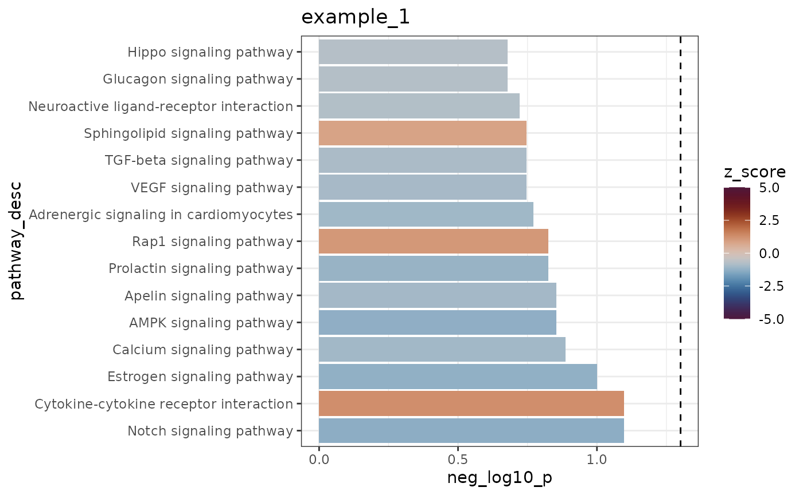
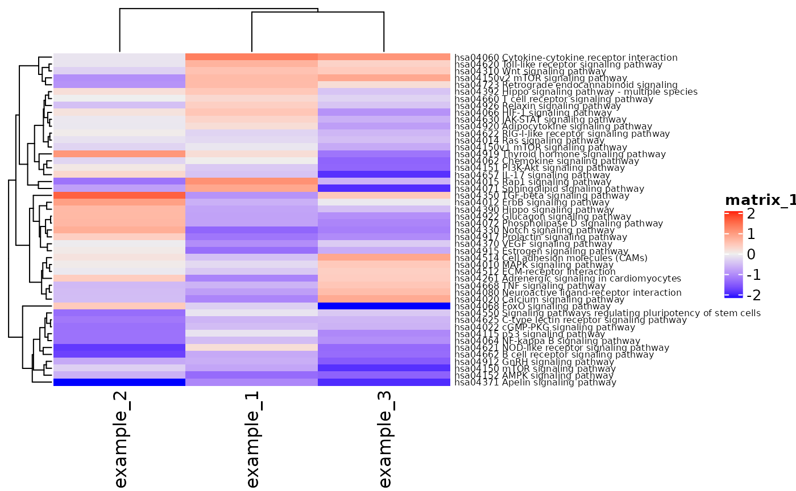
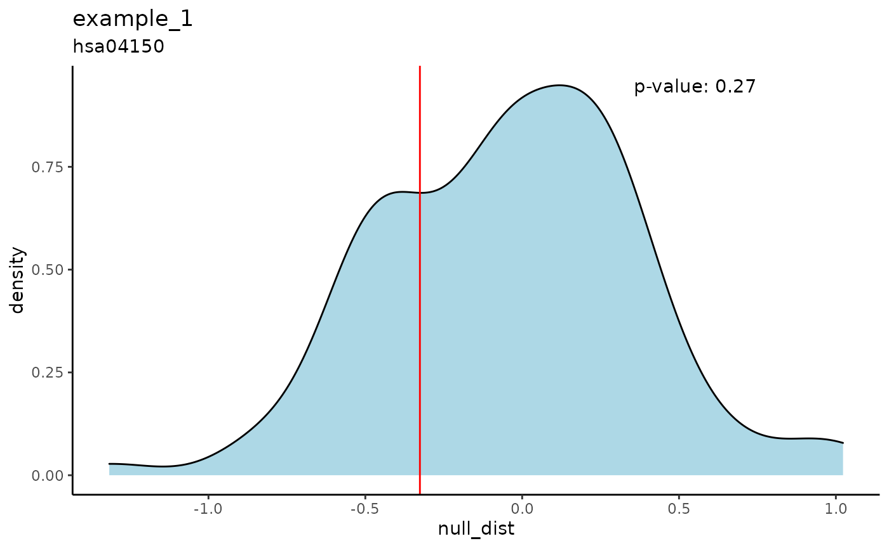
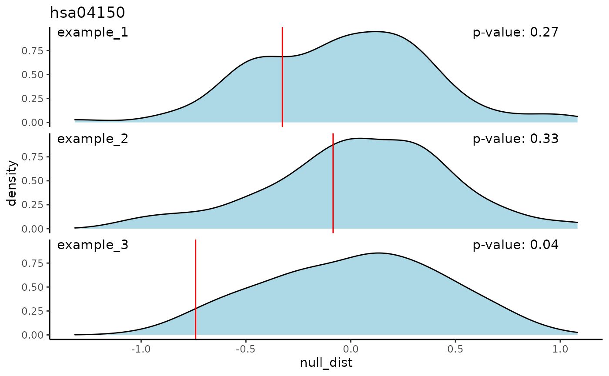

iPAS_vignette.RmdThis is a simple introduction to the iPAS R package. This package performs pathway enrichment for differential expression data (RNA-seq, microarray, etc.). iPAS stands for integrative Pathway Activity Signatures, our method for constructing “signatures” of transcriptional response to signaling pathway perturbation using L1000 microarray data from the NIH LINCS project. The signatures are “integrative” in that they integrate cellular response across a diverse set of cell lines used in LINCS.
This vignette will show how the package works and how to perform simple pathway enrichment and create plots to analyze the output.
First load the example RNA-seq data. The data originally came from differential expression signatures created from a gene silencing experiment. The genes have been shuffled as the data has not yet been published.
The format of the data is a matrix where the rownames are entrez IDs of the genes and the column names are the names of each sample or experiment. The numbers represent log2-transformed fold-change of counts per transcript (FPKM - Fragments Per Kilobase Million) from control to treated samples.
## example_1 example_2 example_3
## 1 0.0000000 0.000000 -0.0267561
## 503538 0.0472849 -0.148369 0.4159920
## 29974 0.0420521 0.381958 0.0000000
## 2 0.0316558 -3.229630 0.0000000
## 144571 0.1637790 0.000000 0.1874540
## 144568 -0.1971360 0.276755 0.0000000The iPAS_enrich function performs pathway enrichment for each sample (this may take a few minutes). The function scores the differential expression from the input sample by its similarity to the iPAS signature for each pathway. By default, we use Pearson correlation for the similarity, but cosine similarity and the dot product between the two are given as options.
The significance of the pathway score is established via a permutation test. We permute the input signature n times (n=1000 by default) and calculate a null distribution of n pathway scores. We use the null distribution of scores to calculate an empirical p-value and a z-score.
Here we set the number of permutations to 100 to run the example quickly.
You may view the pathway scores as a table.
res$example_1$ensemble## # A tibble: 181 x 23
## pathway cell_line score z_score p_emp direction gene_scores query_scaled
## <chr> <chr> <dbl> <dbl> <dbl> <chr> <list> <list>
## 1 hsa054… ensemble 0.911 2.26 0 Positive <NULL> <NULL>
## 2 hsa030… ensemble -1.08 -1.85 0.01 Negative <NULL> <NULL>
## 3 hsa049… ensemble -0.513 -1.69 0.01 Negative <NULL> <NULL>
## 4 hsa046… ensemble 1.26 1.61 0.04 Positive <NULL> <NULL>
## 5 hsa045… ensemble -0.22 -1.68 0.05 Negative <NULL> <NULL>
## 6 hsa049… ensemble -0.271 -1.63 0.06 Negative <NULL> <NULL>
## 7 hsa052… ensemble -0.656 -1.53 0.06 Negative <NULL> <NULL>
## 8 hsa052… ensemble 1.05 1.58 0.07 Positive <NULL> <NULL>
## 9 hsa047… ensemble -0.378 -1.56 0.08 Negative <NULL> <NULL>
## 10 hsa047… ensemble -0.707 -1.38 0.08 Negative <NULL> <NULL>
## # … with 171 more rows, and 15 more variables: pas_scaled <list>,
## # ens_weight <dbl>, score_type <chr>, overlap <list>, null_dist <list>,
## # gene_scores_ens <list>, pathway_desc <chr>, size <int>, num_comps <int>,
## # largest_comp <dbl>, path_nodes <named list>, path_nodes_list <named list>,
## # Category_Lv1 <chr>, Category_Lv2 <chr>, Category_New <chr>The iPAS_bar function creates a bar plot of the top scoring pathways for a sample. Here, bar height represents the empirical p-value (negative log10 transformed, so higher is more significant) and the color represents the z-score. The dotted line shows the cutoff for significance at a p<0.05 level.
iPAS_bar(res, experiment = 1, num_top = 15, fill = "z_score", bar_height = "neg_log10_p")
The iPAS_heatmap function creates a heatmap of pathway z-scores for each sample. The heatmap is clustered by rows (pathways) and columns (samples) so that a user can see which pathways score similarly across samples.
iPAS_heatmap(res, pathway_names = "both", category = "Signaling")
The iPAS_density function shows the null distribution of pathway scores (or z-scores) for one sample. The score or z-score of the sample is shown by a red line, along with a p-value.
The iPAS_density_facet function does the same for all samples at once.
iPAS_density(res, path = "hsa04150", experiment = 1, score_type = "score")
iPAS_density_facet(res, path = "hsa04150", score_type = "score")